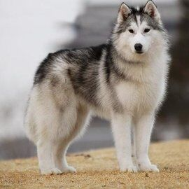
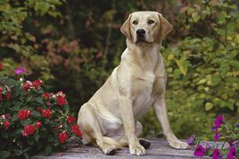
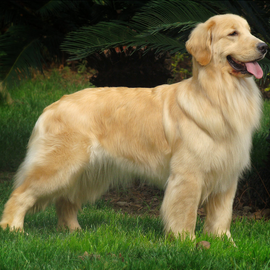

中型呆萌
第一名：撒手没_哈士奇
哈士奇名字的由来是源自其独特的嘶哑叫声。在西伯利亚东北部的原始部落楚克奇族(Chukchi)人，用这种外型酷似狼的犬种作为最原始的交通工具来拉雪橇，并用这种狗猎取和饲养驯鹿，或者繁殖这种狗然后带出他们居住的冻土地换取温饱。哈士奇性格多变有的极端胆小，有的极端暴力，进入大陆和家庭的哈士奇都已经没有了野性比较温顺，是一种流行于全球的宠物犬。哈士奇与狼的区别是脸颊比较圆。
第二名：拉拉_拉布拉多
拉布拉多寻回犬因原产地在加拿大的纽芬兰与拉布拉多省而得名。拉布拉多寻回犬是一种大型犬类，个性忠诚、大气、憨厚、温和、阳光、开朗、活泼，智商极高，也对人很友善，是非常适合被选作经常出入公共场合的导盲犬或地铁警犬及搜救犬和其他工作犬的狗品种，跟西伯利亚雪撬犬和金毛寻回犬并列三大无攻击性犬类，拉布拉多智商位列世界犬类第六位。
第三名：追踪犬_金毛
金毛的独特之处在于它讨人喜欢的性格，是属于匀称、有力、活泼的一个犬种，特征是稳固、身体各部位配合合理，腿既不太长也不笨拙，表情友善，个性热情、机警、自信而且不怕生。善于追踪及具有敏锐嗅觉的犬种，金毛犬最早是一种寻回猎犬。现在大多作为导盲犬与宠物狗。金毛犬在犬类智商排行榜上排名第四，对小孩子或者婴儿十分友善。
 大白熊
大白熊